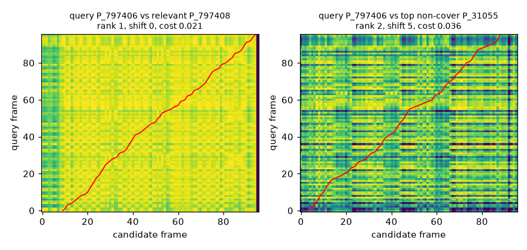

Project / Cover Song Retrieval
Can a machine recognise the same song when almost everything about the recording has changed?
A two-stage cover song identification system on Da-TACOS, built from HPCP features only and evaluated four times on the full benchmark. The first evaluation was a negative result, and most of this page is about what that result taught.
The system
One track, seven representations.
The same information, rewritten at every stage — until two recordings of one composition can be scored against each other.
01 / 07 Input / audio Illustrative
-
Stage 01 — Built
Input / features
Da-TACOS ships precomputed features rather than raw audio, so this project works from HPCP only. Every track carries a work ID and a performance ID; two tracks are a cover pair when they share a work ID, and every split is made at the work level so no composition sits on both sides of it.
-
Stage 02 — Built
Representation / 12 pitch classes
Each recording is a T×12 HPCP matrix. Timbre and octave are discarded on purpose, because they are exactly what a cover changes. Frames are L2 normalised, area-resampled to a fixed length (96 for the classical view, 384 for reranking, 512 for the encoder) and normalised again.
-
Stage 03 — Built
Alignment / key rotation
Key invariance comes from the features, never from key labels: the candidate is rotated through all twelve circular shifts and the best one is kept. It buys key invariance and quietly assumes the key never changes mid-song — an assumption that does break.
-
Stage 04 — Built
Sequence alignment / DTW
A cosine cross-similarity matrix between the two sequences, then subsequence DTW with steps (1,1), (2,1) and (1,2), written from the textbook recurrence with a batched PyTorch version checked against the reference. The accumulated cost is the alignment score.
-
Stage 05 — Built
Learned representation
A small temporal convolutional encoder (six dilated residual blocks, 645,504 parameters) trained with a supervised contrastive loss, producing one 128-d vector per recording. Training is deterministic on CPU: a test checks that two runs give bit-identical weights.
-
Stage 06 — Built
Exact search / shortlist
Exact cosine search over all 15,000 candidates keeps the 30 nearest. Exact rather than approximate, because approximate search is an optimisation and not a result. Whatever is not in this shortlist can never be found by Stage 2.
-
Stage 07 — Built
Rerank · hub correction · evaluation
The 30 candidates are aligned frame by frame and the alignment decides the final order, with a hubness correction subtracted and a calibrated blend with the global score. MAP, MRR and Hit@K are written from scratch, with work-level bootstrap intervals.
Illustrative visualisation, generated in-browser from deterministic functions. It shows the shape of each representation, not measured output. The measured results are in the table below.
Overview
A cover changes the key, the tempo, the instruments, the singer, sometimes the structure. What stays is the composition, a sequence of harmony. The system tries to find it in two steps. Stage 1 turns a whole recording into one vector and keeps the 30 nearest of 15,000 candidates. Stage 2 aligns each of those 30 with the query, frame by frame, and lets the alignment decide the final order.
The project deliberately started classical: a chroma-plus-alignment baseline in the tradition of Serrà et al. 2008, so any learned result had something real to be compared against. It is deterministic from a single seed, covered by 142 tests, and every evaluation setting was locked before any benchmark query was scored.
Core question
What survives when a song is re-recorded, and can a small learned encoder plus alignment find it faster than aligning everything?
Status
Complete: four full-benchmark evaluations, error analysis, a follow-up shortlist study and a draft write-up. Accuracy is still well below published systems.
Dataset
Da-TACOS (Yesiler et al., ISMIR 2019). The benchmark subset holds 13,000 cover tracks in 1,000 cliques, plus 2,000 distractors that belong to no clique and exist purely to punish a system that ranks by loose similarity. Each of the 13,000 queries is ranked against all 15,000 recordings and has 12 true covers to find; a random ranking scores about 0.0008 MAP.
The encoder is trained on works kept entirely separate from the benchmark, and every setting (encoder checkpoint, blend weight, hub-correction strength, resolution) was chosen on held-out validation and calibration works. No benchmark result selected anything, and no run was repeated after its result was seen.
Results
Four runs, and a 4.5× deficit that closed to 1.11×.
| Measure | Run 1 | Run 2 | Run 3 | Run 4 |
|---|---|---|---|---|
| Stage-1 MAP | 0.010 | 0.034 | 0.034 | 0.076 |
| Hybrid MAP | 0.018 | 0.062 | 0.068 | 0.122 |
| Shortlist recall | 0.021 | 0.072 | 0.072 | 0.136 |
| Behind best by | 4.5× | 2.2× | 2.0× | 1.11× |
- Run 1, the original system: on 20 development queries the hybrid had looked best, but on the benchmark exhaustive classical alignment (MAP 0.084) beat it by 4.5×. That was reported as the headline and not tuned away.
- Run 2: encoder trained on all 4,780 usable works, plus hubness correction. Classical alignment rose to 0.136 and the hybrid to 0.062.
- Run 3: reranking at 384 frames instead of 96.
- Run 4: the encoder trained to convergence (150 epochs). The hybrid now reranks a query in 38 ms; exhaustive alignment of the whole benchmark took 2.63 h at 96 frames.
Work-level bootstrap over the 1,000 cliques, change in AP against the matching Stage 1: hybrid with hub correction +0.0457 [+0.0426, +0.0487], classical with hub correction +0.1013 [+0.0936, +0.1090]. Every interval excludes zero. Exhaustive corrected alignment (MAP 0.136) is still the most accurate system built here.
In context. On the same benchmark and HPCP input, Qmax scores 0.333 and ByteCover (CQT) 0.714 (Yesiler et al. 2019). This project’s systems are well below published cover-identification systems, so the value of the work is in why they behave as they do, not in the score.
What the experiments taught
- The shortlist is the ceiling If a cover is not in Stage 1’s top 30, nothing downstream can find it. Only 2.1% of true covers reached the shortlist in run 1; 13.6% do in run 4.
- Hubs are real, and one scalar tames them Tonally static recordings match everything cheaply. Subtracting a calibrated multiple of each candidate’s mean score against 200 fixed probe tracks lifted classical alignment from 0.084 to 0.136 MAP and cut the median first-cover rank from 77 to 14.
- Resolution mattered more than the algorithm Averaging a recording down to 96 frames blurs its harmonic rhythm. At 384 frames, development MAP for classical alignment rose from 0.248 to 0.384, affordable only inside a 30-item shortlist.
- Data beat architecture The same encoder trained on 4,780 works instead of 1,500 went from 0.181 to 0.319 validation MAP; training to 150 epochs reached 0.431, then went flat.
- A small test set lied twice The 20-query development protocol preferred the hybrid (reversed at scale), then said reranking hurts a strong Stage 1 while the benchmark showed it helps. It is now treated as a plumbing check.
- A bigger shortlist keeps paying, until the reranker becomes the problem Aligning the top 500 instead of the top 30 lifts hub-corrected MAP from 0.122 to 0.212, at about 362 ms per query instead of 22. From K = 200 most failures are covers that are present but ranked below a non-cover.
Hubness correction for cover identification is prior art (Seo 2022; Li & Chen 2018). What this project adds is a held-out-calibrated measurement of it at Da-TACOS scale, on a baseline about four times weaker than Qmax.

Architecture
Audio features to a ranked list, in two stages.
Stage 1 — look
- HPCP preprocessing frame L2, area-resample to 512
- TCN encoder 6 dilated residual blocks, 128-d
- Exact cosine search keep top 30 of 15,000
Stage 2 — listen closely
- Key rotation best of 12 circular shifts
- Subsequence DTW 384 frames, cosine cost
- Hub correction + blend −λ hub score, α blend
Evaluation
- Work-level split WID-disjoint, no clique leakage
- Ranking metrics MAP, MRR, Hit@K
- Significance work-level bootstrap intervals
Design Decisions
- Implement the classical baseline first, so a neural improvement has to prove itself against something real.
- Write DTW and the retrieval metrics from the textbook recurrence, with no cover-song library imported.
- Split at the work level, never the track level, because two versions of one song are not independent samples.
- Handle key with an explicit twelve-rotation search on the features, never from key labels.
- Lock every setting on held-out works before scoring any benchmark query, and report the first result even when it is unflattering.
- Keep exact search; approximate search is an optimisation, not a result.
- Keep a numbered decision log (D-001 to D-022) so each change has a recorded reason.
Limitations
- Accuracy is below published systems The best locked system scores 0.136 MAP. The same pipeline with a 500-item shortlist reaches 0.212; Qmax on the same input scores 0.333.
- Stage 1 still limits the hybrid at small K Shortlist recall is 0.136 at K = 30, and encoder validation MAP was flat over the last 30 of 150 epochs.
- The likely strongest configuration was never run Classical alignment at 384 frames with hub correction over all pairs would take about 42 hours of CPU.
- Whole-query alignment Subsequence DTW aligns the entire query in order, so covers that drop or reorder sections are penalised. Qmax-style local alignment is not implemented.
- Dataset scope Da-TACOS is feature-only, from 2019 and Western-pop-centric. Nothing here shows robustness to short, live, noisy or partial queries, or to production-scale catalogues.
Lessons Learned
The hardest part was never the model. It was the discipline around it: deciding what counts as a correct retrieval, splitting so nothing can leak, and locking settings before looking. The 20-query development set said the opposite of the benchmark twice, so the project now treats small protocols as plumbing checks and lets the full benchmark, with intervals, decide.
The other lesson is about negative results. Run 1 lost to a classical baseline by 4.5×. Reporting that plainly is what made the error analysis possible, and the error analysis is where every later improvement came from.
What’s next
- Done Two-stage system, four benchmark runs Classical baseline, learned encoder, hybrid reranking, hubness correction, bootstrap intervals, and a numbered decision log.
- Done Shortlist study and draft write-up K sweep, failure-by-K analysis, adaptive K and a fused Stage 1, written up as a draft with audits of its own numbers.
- Next A strong baseline through the same analysis MOVE or Re-MOVE on the CREMA-PCP features Da-TACOS ships.
- Later A reranker that holds up at large K, and local alignment From K ≈ 200 most failures are covers outranked inside the list.
Interactive walk-through: cover-version-retrieval.vercel.app. Code, decision log and reports: github.com/hey-shiv/cover-version-retrieval.
Grounding Work
- Serrà, Gómez, Herrera & Serra (2008) — chroma binary similarity and local alignment for cover song identification.
- Yesiler et al. (2019) — Da-TACOS, the dataset and benchmarking protocol this project follows.
- Khosla et al. (2020) — supervised contrastive learning, the encoder’s training loss.
- Bai, Kolter & Koltun (2018) — why a dilated temporal convolution is a reasonable first sequence encoder.
- Seo (2022) — pairwise similarity normalisation based on a hubness score.
- Müller, Fundamentals of Music Processing (2021), Ch. 3 — chroma, synchronisation, and DTW.